Listen
Scripture read aloud, with the words lighting up in time with the narration and the page following on its own. Six narrators, a sleep timer, adjustable pace, AirPlay, and it keeps playing on the lock screen.
Cardinal is built for reading Scripture, sitting with it, and talking to God. There is no feed to scroll, no streak to protect, and nobody watching what you read.
Reading the Bible is free, always. No account, no sign-in.
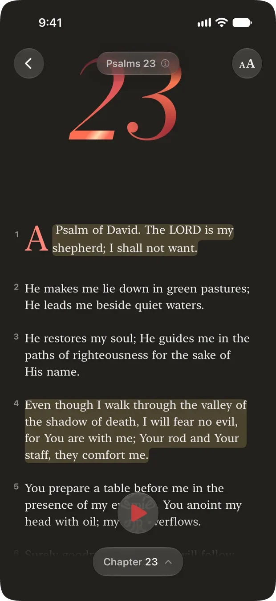
Bible apps have become social platforms, full of feeds and features that distract you from simply reading the Bible.
Cardinal is different. It was built for one person, alone with Scripture, for as long as they want to stay there. Everything in it is judged by whether it helps you read, or pulls you away from reading.
That is why so much is missing on purpose.
Read
Cardinal opens on the Berean Standard Bible. No setup, no account, no choosing a plan before you are allowed to read a verse.
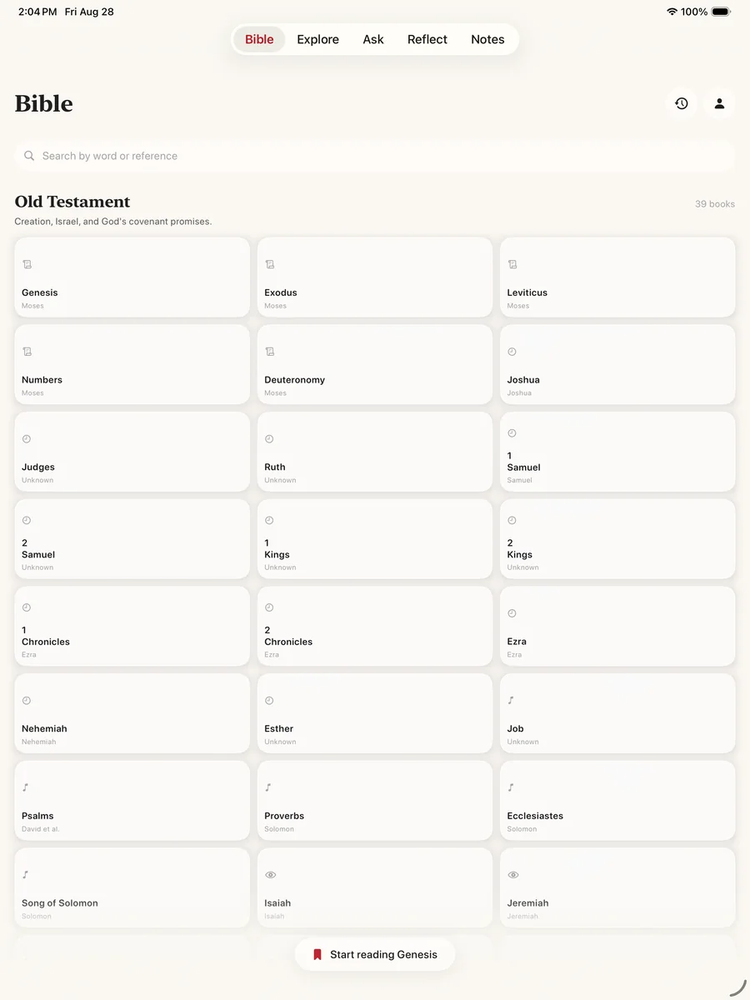
The study tools are not in a separate mode you have to go and find. Tap a word, a verse, or the chapter title, and they are already there. Three of the four below need no connection at all.
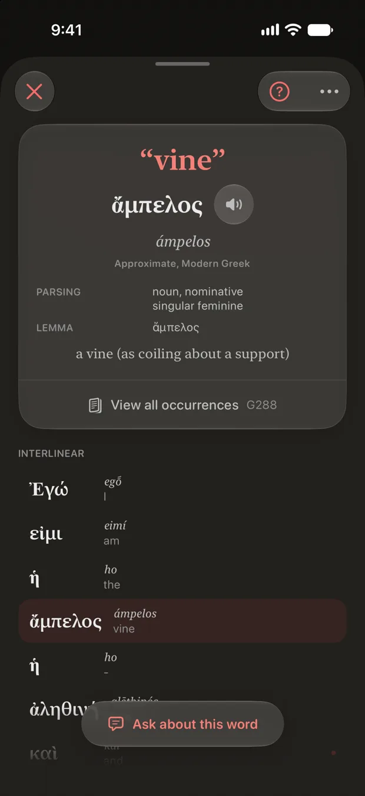
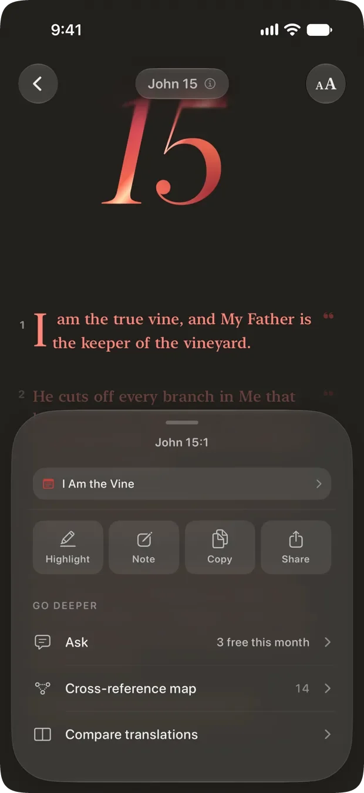
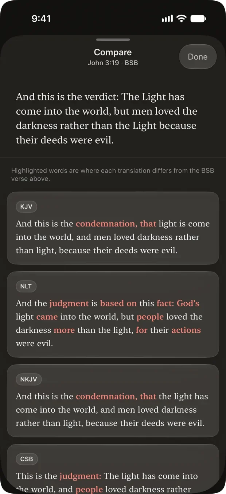
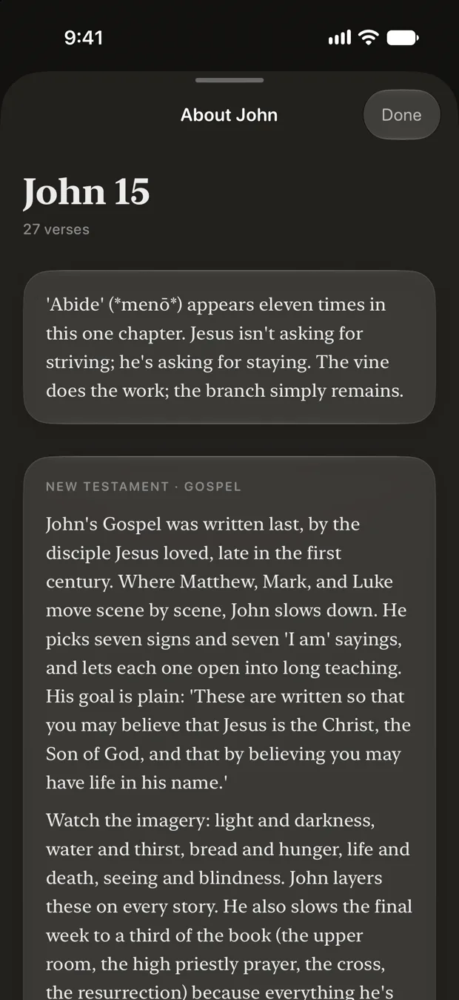
Ask
Everyone hits a verse they do not understand. Ask, and get an answer drawn from the passage in front of you: cross-references, word studies, historical context.
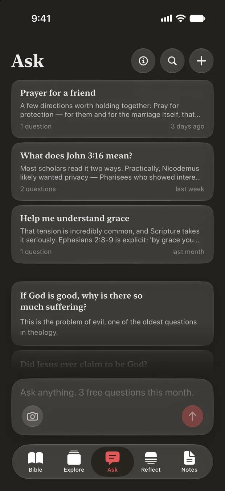
Your own path
Curated paths cover the ground most people want. When none of them is the thing you are actually carrying, say what it is in your own words and Cardinal shapes a reading path around it. This is free.
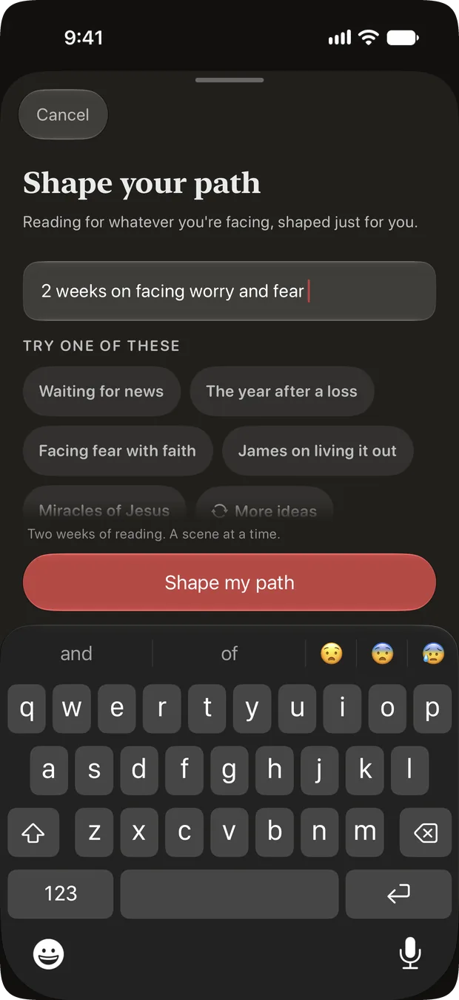
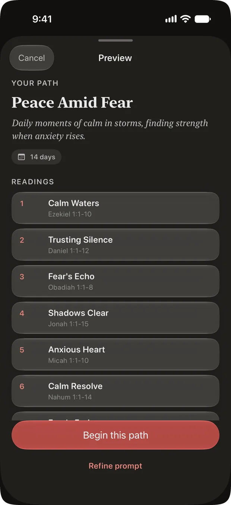
Reflect
Cardinal’s Reflect tab holds one Quiet Time a day. You are never handed a chapter and left to it: each day is a curated passage of fifteen to twenty-five verses, the natural scene the text is built around.
Your archive is searchable, and it is private. Nothing keeps score.
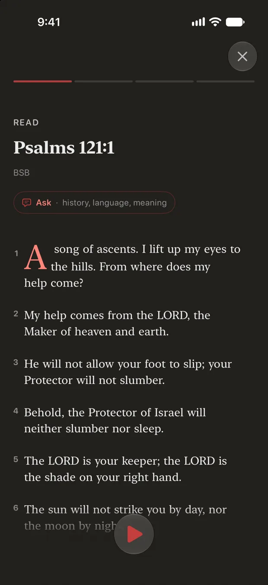
Memorize
Two ways to practice, and a deck that quietly works out which verses you are still learning.
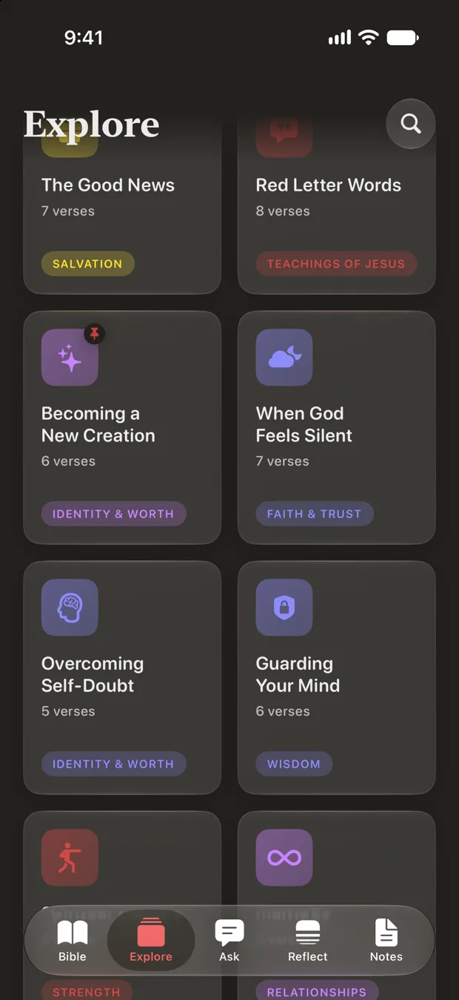
All of it is included for everyone, with no subscription. Where one part of something needs Pro, it says so below.
Scripture read aloud, with the words lighting up in time with the narration and the page following on its own. Six narrators, a sleep timer, adjustable pace, AirPlay, and it keeps playing on the lock screen.
Seventeen journeys flown place to place over real 3D satellite terrain. Paul's voyages, Abraham's road, the Exodus, Passion Week. Read each stop's story, hear it narrated, share it as a card of the place itself.
Structured the way sermons are actually preached: big idea, main points with their own verses, application, ways to serve. Group them by series. For sermons you hear and sermons you give.
A workspace for preparing one. Gather verses, illustrations and quotes as you read, shape an outline, keep an archive. Editing a study is part of Pro; reading and exporting one never is.
A Verse of the Day, today's Quiet Time passage, or your Memorize progress, pinned to the home and lock screen, so the first thing you see in the morning is the Word.
Four glances: the verse, the next passage, what is playing, and a recall drill. It works cold, with your phone nowhere nearby. The complication is just the verse, not a number telling you how you are doing.
The same app, laid out for the larger screen. Good for a long sitting at a desk, or for reading two translations side by side.
The eight bundled translations read and search with no connection at all, and the five other free ones do the same once you download them in full. Memorizing, highlighting and note-taking work anywhere. Audio and Ask need a signal, and so do the four Pro translations, which their licenses keep stream-only.
Every rating Cardinal has on the App Store is a five. Here are three of the reviews, in full.
This thing is 3.6MB runs entirely on device, no cloud, no sub. This is the bible app for you, it will really help you memorize scripture, finally.
Very well designed and makes studying and memorizing scripture very easy. Would love to be able to add my own verses someday.
Personally, sometimes I just need something quick while I’m on the go. The practice verse challenge is the best, I just learned how to flip back and forth with the simple button layout when a hard one comes up!
Cardinal will not write your sermon: the study, the structure, and the words stay yours. A promise in the source code
Thirteen of them are free, and they always will be. Reading Scripture never requires a subscription.
Licensed from their publishers. Each one comes with a free day to try, once, so you can read it before deciding. Read two side by side and see where they differ. These four are the only translations that need a connection every time: their licenses do not allow Cardinal to store the text, so they cannot be downloaded or searched offline.
Every menu, book name and answer follows the language your phone is set to.
Eight of the nine also read a Bible in that language. A Korean translation is not licensed yet, so Korean currently reads with an English text.
What you underline, what you pray about, and what you ask are some of the most private things a person has. Cardinal is built so that they stay that way.
Cardinal is free to download and free to use. Reading the Bible is free and stays free. A subscription covers the two things that cost money to run: the translations licensed from their publishers, and the AI behind Ask.
Free
A subscription
The App Store shows what Cardinal Pro costs where you are. A study you have already written stays readable and exportable even if a subscription lapses.
The short answers, before you download anything.
Yes. Cardinal is free to download and free to use, with no account and no sign-in. Reading the Bible is free in thirteen translations and always will be. Quiet Time, Memorize, Journeys, audio, notes, widgets and the Apple Watch app are all included for everyone. Cardinal Pro is an optional subscription covering the four translations licensed from their publishers, unlimited use of Ask, side-by-side reading, and editing your own studies. The App Store shows what it costs where you are.
No. There is no name, no email, no password and no sign-in anywhere in Cardinal. You open the app and you are reading. Your sittings, notes, prayers and highlights live on your device, and with iCloud turned on, in your own private iCloud.
Yes, in thirteen of the seventeen translations. Eight are bundled with the app and read and search with no connection at all: the King James, Berean Standard, World English and Majority Standard Bibles, Reina-Valera 1909, Louis Segond 1910, Almeida 1911, and 和合本 (简体). The five other free translations stream a chapter at a time and keep it, and you can download any of them in full from the translation picker. The four Pro translations are the exception: their publishers do not permit storing the text, so those read from a connection every time and are never searchable offline. Highlighting, notes and memorizing work anywhere.
None of them. No feed, no comments, no profiles, no streaks, no badges, and no notification telling you that you missed a day. Nothing in Cardinal keeps score, because nothing in it is performed for anyone else.
Seventeen. Eight are free and fully offline, five more are free and streamed (Luther 1912, Elberfelder 1871, Menge-Bibel, Синодальный перевод and 和合本 (繁體)), and four come with Cardinal Pro: the New King James, New American Standard, Christian Standard and New Living Translation. Each Pro translation includes one free day to try it, once.
Yes, and it is free. Describe what you are facing in your own words, choose a length from a week to a year, and choose how much to read at a sitting. Cardinal builds a day-by-day path and shows you the whole thing before you begin, so you can swap a passage, reorder the days or remove one. On an iPhone with Apple Intelligence the path is built entirely on the device. A path advances when you finish a reading rather than when the calendar does, so a gap never leaves you behind.
There are no ads, no advertising identifiers and no tracking across other apps, which is why Cardinal never shows you the permission prompt asking to follow you. What you underline, pray about and ask is not on a server anyone here can read. Photos you scan for a verse are read on your device and never uploaded, and payment is handled entirely by Apple. There is anonymous, aggregate product analytics and Apple Search Ads install attribution; neither identifies you.
iPhone, iPad and Apple Watch, on iOS 17 or later. The iPad layout uses the larger screen, including reading two translations side by side. The Watch app has four glances and works with your phone nowhere nearby. Cardinal is not on Android today.
Only what you deliberately ask. When you use Ask, your question and the surrounding passage are sent to be answered. Text licensed from a publisher is never sent: the model reads a public-domain rendering, and only the name of your translation travels with the question. Your notes, prayers, highlights and reading history are not part of it.
That is the whole app. Everything else was left out on purpose.
Download on the App Store